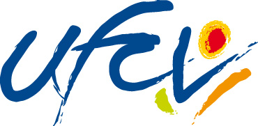
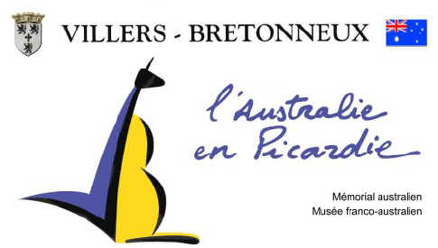

Qui suis-je ?
Un Etudiant
Un Développeur Web Junior
Un Streamer Twitch
"L'échec est le fondement de la réussite." Abraham Lincoln
Biographie
Je m’appelle Lucas Madranges, alias “BabyLucky” sur les réseaux, je suis français, né à Charenton-le-Pont en Ile-de-France et j’habite actuellement à Marcelcave, dans la Somme.
Je suis un grand passionné de l’informatique et motivé d’apprendre beaucoup de chose, par moi-même ou grâce aux autres. Je suis également très organisé et ponctuel dans mon travail.
Je suis actuellement Développeur Informatique depuis 2021, avec une bonne expérience en langage C++ sur l’IDE Qt Creator.
Mais, la formation ne me convient pas, je pars donc l’an prochain, en 2023, au sein de l’école MyDigitalSchool à Lille dans le Bachelor Développeur Web pour effectuer une 3éme année dans le développement web pour approfondir mes connaissances.
Puis, en 2024, à la suite de mon Bachelor, je souhaite continuer vers le MBA Développeur Full-Stack de la même école pour, plus tard, créer ma propre start-up.
J’apprends aussi, par le biais de vidéos en ligne et de site de formation comme OpenClassroom ou Udemy, des framework et bibliothèque pour Javascript et CSS comme Bootstrap ou Vue.JS.
En dehors du web, j’apprendrais à créer d’autres projets comme des jeux vidéo sur Unity, du Modèle 3D avec Blender, des Mods Minecraft avec Java ou encore un Bot Discord avec Discord.js.
Je vais aussi, par la suite, faire du stream en ligne sur des projets web, Unity, mobile... ainsi que des vidéos de cours en ligne pour apprendre certains langages ou des tutoriels.
D’ici juillet 2023, je vais simplement commencer le streaming en ligne sur des projets web ou de jeux vidéo, mais il m’arrivera parfois aussi de faire d’autres contenus comme simplement jouer à des jeux vidéo.
Mes Formations

MyDigitalSchool
Etudiant
France, Lille (59)
Formation pour l'obtention du Bachelor Développeur Web (Bac +3) à partir de Septembre 2023.

Lycée Edouard Branly
Etudiant
France, Amiens
Formation pour l'obtention du BTS Sstèmes Numériques option Informatique et Réseaux (Bac +2) de Septembre 2021 à Juin 2023 (actuellement).

Association UFCV
Apprenti
France, Amiens
Formation pour l'obtention du BAFA en 3 étapes de juillet 2020 à juin 2021.
Lycée Edouard Branly
Etudiant
France, Amiens
Formation pour l’obtention du BAC Technologique STI2D option Systèmes d’Information et Numérique de Septembre 2018 à Juin 2021.

Collège Jacques-Brel
Elèves
France, Villers-Bretonneux
Formation pour l’obtention du Brevet national du collèges de Septembre 2017 à Juin 2018.
Mes Diplômes
Lycée Edouard Branly
Etudiant
France, Amiens (80)
Diplôme du BTS Systèmes Numériques option Informatique et Réseaux (pas encore obtenu).
Association UFCV
Apprenti
France, Amiens (80)
Diplôme du BAFA obtenu en Juillet 2021.
Lycée Edouard Branly
Etudiant
France, Amiens (80)
Diplôme du BAC Technologique STI2D option Systèmes d’Information et Numérique (Mention Assez Bien) obtenu en Juin 2021.
Collège Villers-Bretonneux
Elèves
France, Villers-Bretonneux (80)
Diplôme national du brevet des collèges (Mention Très Bien) obtenu en Juin 2018.